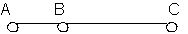
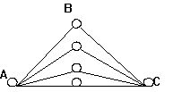

Учебная деятельность в ШДК1
И.Е.Берлянд
Задача этой работы - обсудить некоторые теоретические проблемы учебной деятельности в контексте целостной концепции школьного образования - школы диалога культур.2
Учебная деятельность существует везде, где есть такой институт, как школа и, соответственно, школьный возраст. Учебная деятельность строит школьный возраст как ак нечто целостное, как самостоятельный этап, подобно тому, как, например, игра строит дошкольный возраст. Каждая из школьных систем предлагает свое понимание учебной деятельности - в соответствии со своим пониманием задач школьного образования, его содержания, проблем культуры., возраста и т.п. Иногда это представление неотрефлектировано, не представлено в теоретической форме, но интуитивно каждая школьная система исходит из некоторого представления о смысле и содержании учебной деятельности. Соответственно каждая культура, имеющая такой институт, как школа, определенным образом понимает учебную деятельность.
Максимально целостно и теоретически представление об учебной деятельности развито в школе Развивающего обучения.3В этой школе в основном актуализируется нововременное представление о культуре, образовании и, соответственно, об учебной деятельности. Мы не можем взять в этой концепции готовое понятие учебной деятельности и перенести в нашу школу. Поставленное в иной контекст целостной системы образования, это понятие радикально меняет смысл. Но идеи, развитые в концепции РО, чрезвычайно существенны для формулированная нашего собственного подхода к учебной деятельности - по двум причинам. Первая заключается в том, что концепция РО является основным собеседником и оппонентом для концепции ШДК - не только фактически, по обстоятельствам (в частности, в связи с биографическими обстоятельства авторов концепции ШДК), но и содержательно, логически. Я полагаю, что именно из анализа давыдовской концепции, если взять ответственно ее утверждения и логически их развить в соответствии с новым пониманием современной культуры, получится логическая необходимость нашей концепции. Дело обстоит не так, что почему-либо нас не устраивает концепция развивающего обучения и мы вместо нее создаем новую; нет, глубоко анализируя саму эту концепцию, пытаясь последовательно развивать ее положения, обнаруживая основания этих положений, мы, возможно, прийдем к таким точкам, когда она, эта концепция, окажется вынужденной изменить свои собственные основания, “выйти из себя” и обнаружиться как источник нового понимания учебной деятельности. Аналогичным образом содержательный источник современной философской логики в исполнении В.С.Библера - это последовательное доведение гегелевской логики до того предела, где она вынуждена изменять свое основание. Главный собеседник и оппонент для Библера - это Гегель, а не те философы, системы которых, казалось бы, более близки его системе. Так же и для ШДК главный собеседник - это система развивающего обучения, а не, например, школа сотрудничества, или Вальдорфская педагогика, которые иногда кажутся больше похожими на ШДК. Вторая причина заключается в том, что нововременная идея образования - и, соответственно, учебной деятельности - постоянно воспроизводится внутри ШДК - и поскольку это школа, то есть цивилизационный институт, ориентированный на образование, и в связи с основной идеей концепции школы диалогакультур, предполагающей диалог, в частности, с культурой Нового времени, которая в повороте на школу превращается в культуру образования. Поэтому я считаю необходимым бегло воспроизвести основной схематизм подхода к учебной деятельности в концепции РО и попытаться обнаружить те точки, в которых, на мой взгляд, возникает необходимость его пересмотра.4
Учебная деятельность, культура и возраст в концепции РО и ШДК
Понятие учебной деятельности в концепции РО имеет в своей основе определенную - нововременную, как уже было отмечено, восходящую к гегелевской логике,5идею учебности (школы, образования ) и, с другой стороны, некоторое общепсихологическое понятие деятельности, заимствованное также из гегелевской системы, но психологически преобразованное в работах А.Н.Леонтьева 6.
Традиционная цель и смысл такого института, как школа - вхождение ребенка в культуру, переключение культуры в индивидуальное сознание ученика. В этом и состоит главная задача учебной деятельности. Но как сама культура, так и смысл “вхождения” в культуру ребенка понимается по-разному в разных школьных системах.
В концепции РО вхождение в культуру понимается как интериоризация, или присвоение.7Культура здесь - идеальная система, не зависящая от индивидуального сознания. Ребенок, рождаясь, застает культуру готовой, как внешнюю целостную нормативно заданную систему. Ребенок делает эти нормы своими, т.е. присваивает. Присваивает анонимные вещи, пусть даже и созданные раньше кем-то, то есть исходно авторские, но ставшие анонимными, входящие в культуру как анонимные, а потому усваиваемые всеми одинаково, хотя, возможно, в разном темпе, с разными индивидуальными особенностями и т.п., но это уже относится к психологии, а не к культуре.
Но нельзя ребенка учить всему. РО считает, что учить надо наивысшим достижениям культуры. Понятие культуры здесь связывается с идеей прогресса,снятия. Каждая новая культура включает все предыдущее в снятом виде. Вот эти “снятые” формы и должны быть преподаны детям. Не все то, что придумано математиками, преподается в школе РО. Преподается то существенное, которое в снятом виде содержит историю математики и составляет содержание современной математики.
Аналогично с пониманием культуры понимается и возраст. Школьный возраст снимает в себе дошкольный, включает в себя в снятом, преобразованном виде все достижения дошкольного возраста. Соответственно старший школьный возраст снимает в себе младший и т.п. Работает та же идея прогресса.
В ШДК мы иначе понимаем саму культуру. Это понимание культуры логическиосмысленно в работах В.С. Библера.8
Культура в этой концепции не представляется как развивающаяся прогрессивно, от более простого к более сложному, существующая в логике снятия, как это понималось в девятнадцатом веке. Сейчас обнаруживается, что, например, античность предложила равномощный по сравнению с девятнадцатым веком способ понимать вещи, радикально другой, а не просто исходный (в смысле более простой). Культура девятнадцатого века не может быть понята как развившаяся из культуры античности: они общаются как равноправные, а не как более ранняя стадия с более поздней.Современная культура не понимается больше как последняя ступенька лестницы, на которую мы должны помочь взобраться ребенку. Вообще разные исторические культуры понимаются не как ступеньки одной лестницы. а как общающиеся голоса, как субъекты. Выясняется, что, хотя мы многое знаем из того, чего не знали греки, но способ понимания, который создали греки, вечен. И, например, логика Платона может быть понята не как момент или ступенька к логике Гегеля, а как равноправный собеседник по отношению к новой логике, по схеме примерно такой: как бы Платон ответил (возразил) Гегелю.
Каждая культура в своих произведениях сохраняется как субъект, как неснимаемый голос, который может воспроизводиться и развиваться в общении с другими культурами. Поэтому в современных элементарных понятиях - числа, слова, времени. жизни воспроизводятся голоса других культур, других способов понимания. Там, где понятие ХХ века выходит на свои начала, на проблему своего обоснования, спорят разные способы понимания, разные возможные логики. В диалоге этих возможных логик, спорящих о начале понятия, только и существует понятие ХХ века.9
Следующее важное расхождение с концепцией РО связано с понятием возраста. Нельзя включиться, войти в культуру и там оставаться. Это нужно каждый раз строить заново. Поэтому возраст ученичества не может быть понят только как определенный этапразвития, в снятом виде включенный в следующие этапы. Этот возраст как некоторый субъект остается навсегда, воспроизводится в сознании за пределами собственно школьного возраста. Каждый взрослый может и должен воспроизводить в себе школьника, ученика. Это относится не только к школьному возрасту, но к понятию возраста вообще. Наряду с идеей роста, взросления, прогрессивного развития очень важна идея сохранения и удержания возраста как неснимаемого субъекта, который, как и культура, обнаруживает свои новые возможности в общении, столкновении с другими возрастами. Так, например, дошкольный возраст, возраст игры и сознания, не преодолевается с началом школьного обучения, но обнаруживает свою насущность, неснимаемость, раскрывает свои возможности в ответ на новые запросы.
Так же и школа (и, может быть, даже в большей степени) создает такого субъекта - ученика, который остается во взрослом после исчезновения цивилизационной формы - школы. Как и античная цивилизация, исчезнув, оставляет вечного субъекта - античную культуру. (Вообще идея возраста обнаруживает логические и содержательные параллели с идеей культуры; об этом - в отдельной работе.)
Создание субъекта учебной деятельности, учащегося субъекта и сохранение его навечно и составляет основной смысл учебной деятельности и главное с точки зрения возрастной психологии содержание школы.
Учебная деятельность как деятельность
В концепции учебной деятельности в РО понятие субъекта тесно связано с психологическим понятием деятельности, в классическом виде разработанным А.Н.Леонтьевым и его последователями.10Я воспроизведу основные моменты этой концепции.
Деятельность понимается как такая историческая практика, которая есть первичное и порождающее начало по отношению к психике. Психика существует в этой концепции не сама по себе, а как включенная в деятельность и исходно понимается как механизм, обслуживающий деятельность - внешнюю, предметную, материальную деятельность. Леонтьев приводит элементарные примеры - не из человеческой психологии - чтобы животное могло осуществлять пищедобывающее поведение, оно должно иметь некоторый образ движения жертвы, если это животное - хищник. Этот вот обслуживающий компонент деятельности и есть психика. И генетически, и логически первична внешняя предметная деятельность. Внутренняя же психическая деятельность есть результат интериоризации внешней предметной деятельности. Как это выглядит? Когда человек использует какие-то вне его находящиеся материальные вещи и по ним строит свою деятельность, его ориентировка носит внешний характер - например, Мальчик-с-пальчик разбрасывает камешки, чтобы по ним найти дорогу домой. Эти камешки есть внешние метки, ориентиры. Можно эти камешки интериоризировать, то есть запоминать и внутри себя держать образы тех ориентиров, которые помогут вернуться домой. Это есть интериоризация внешних ориентиров. Так же маленький ребенок учится считать вначале на пальцах или с помощью счетных палочек - это внешние предметы, с которыми он работает. Когда эти предметы интериоризируются, погружаются внутрь, палочки ему уже не нужны.
Внутренняя психическая деятельность, таким образом, есть интериоризованная внешняя деятельность. Но что именно интериоризуется? Не просто случайная деятельность этого индивида, а, если речь идет о человеке, в отличие от животных, то, согласно этой концепции, интериоризируется некоторое идеальное , то есть то, что существует в культуре, те формы деятельности, формы и способы выполнения этой деятельности, ориентировки, которые выработаны в культуре и зафиксированы в виде некоторых орудий, знаков. Что такое орудие? Это материально зафиксированный способдействия, выработанный в человеческой культуре: например, ложка - это зафиксированный в виде некоторого материального предмета способ есть по-человечески; китайские палочки - это зафиксированный в орудии другой способ аналогичного по назначению действия, характерный для другой культуры. Идеальные вещи, усваиваемые, интериоризируемые ребенком, такие, как знаки и понятия, в контексте этой концепции - не что иное, как теоретически зафиксированный выработанный культурой способ действия с теми или иными предметами. Например, число - это способ измерения величин, выработанный человечеством и культурно зафиксированный в виде понятия. Этот идеальныйплан, то есть форма вещи вне самой этой вещи, в форме орудия (теоретического орудия, то есть понятия) и есть то, что присваивается в ходе психического развития. Психическое развитие, суть его, смысл его, форма его - есть присвоение этого идеального. Таким образом формируется человеческая психика.
Здесь - одно из существенных разногласий с концепцией РО. Во-первых, понятие, снашей точки зрения, не может быть понято только как теоретически обобщенный способ действия (практического). Понятие - любое, в том числе и естественно-научное - всегда предполагает некоторый идеальный предмет, по отношению к которому практическое действие невозможно.11Современное понятие, кроме того, представляет собой диалог разных возможностей понимания. Так, например, понятие числа содержит в себе спор разных пониманий числа - как способа измерения, как способа счета (натуральное число), теоретико-множественного понимания числа и т.п.12И во-вторых, понятие, в отличие от орудия, не может быть присвоено раз и навсегда, оно должно каждый раз воспроизводится самим ребенком. ( Орудия человеческой деятельности, впрочем, тоже существуют и используются в некоторой ориентации на понятие, на возможное изменение их самих и их использования, иначе они вырождаются как орудия и становятся органами.)
Деятельность, согласно этой концепции, имеет определенную структуру. Есть некоторое целое деятельности, которой отвечает потребность, представленная в виде побудительного мотива. Мотив - это то, на что направлена наша деятельность. Простейший случай - пищедобывающее поведение направлено на пищу. Выполняется деятельность в последовательности некоторых действий. Например, хищник сначала загоняет свою жертву, потом ее убивает, потом только поглощает - этот пример приводит Леонтьев. Чем более высокоразвитое существо, тем больше ему нужна психика, тем сложнее его деятельность и тем больше отдельных действий между началом деятельности и достижением мотива. Человеческая деятельность отличается тем, что ее действия целенаправленны. Это значит, что человек сознает цель своего действия. И если деятельность соотносится с потребностью и мотивом, то действие соотносится с целью. Для достижения мотива обычно бывает нужно достичь нескольких, иногда многих целей. И наконец, действие выполняется в форме операций. Одно и то же действие может осуществляться в разных условиях, поэтому для его осуществления нужны разные операции. Например, я иду от дома к автобусной остановке, это мое действие, цель - попасть на автобус. В зависимости от условий, например, в зависимости от того, в какой я обуви, какая дорога, сухая или скользкая, есть ли ветер - это мое движение будет выполняться в разных операциях. Операции, как правило, не осознаются, они выполняются автоматически. Но они могут осознаваться в случае затруднения. На дороге появляется какое-то препятствие, и я понимаю, что мои операции не соответствуют условиям. Может быть, только тут впервые я осознаю дорогу как условие моего движения. Тогда операция становится сознательным действием. Затем оно может опять автоматизироваться, перестанет осознаваться и будет осуществляться в виде операции. Таким образом устроена всякая деятельность.
В концепции РО существенное место занимает понятие ведущей деятельности.13Человек осуществляет много самых разнообразных деятельностей, носящих разный характер, но в каждом возрасте некоторая деятельность выделяется как ведущая. Она является той деятельностью, внутри которой развиваются все основные психические новообразования этого возраста и которая конституирует, оформляет данный возраст как нечто целое, как что-то качественно своеобразное по отношению к другому возрасту. Периодизация психического развития, то есть разделение на возрасты, связана в этой концепции как раз с выделением типов ведущей деятельности. Например, для дошкольного возраста ведущей деятельностью является игра. А учебная деятельность является ведущей деятельностью, по давыдовской концепции, в младшем школьном возрасте. Ведущая деятельность не занимает все время ребенка данного возраста и даже большую часть его времени по сравнению с другими деятельностями, но она является ведущей, так как именно внутри нее складываются новообразования, характерные для этого возраста, то есть происходит развитие психики и подготавливается продвижение ее на качественно новый этап, переход к следующему возрасту.
Смысл учебной деятельности как ведущей - в формировании основ теоретического мышления. В отличие от традиционной школы, РО видит смысл учебной деятельности не в приобретении ребенком знаний, умений, навыков, хотя все это очень существенно; знания, умения, навыки включаются в общий контекст учебной деятельности, они нужны в школе постольку, поскольку формируют основы теоретического мышления. А теоретическое мышление в этой концепции - это мышление, осуществляющее содержательноеобобщение. Приведу для пояснения пример, поясняющий, что такое содержательное обобщение по отношению к человеку. Этот пример начинается с Платона, очень любил его Гегель (Давыдов его тоже приводил). Когда мы определяем понятие человека, мы должны обобщить то, что присуще многим людям. Нужно построить некоторое общее понятие, осуществить обобщение. Обобщить можно, говорит Давыдов, эмпирически, то есть выделив какой-то непосредственно наблюдаемый признак, который присущ каждому из людей. Он будет эмпирическим понятием человека. Таким признаком может быть, например, двуногость - люди ходят на двух ногах. Но этого недостаточно. У Платона один из участников диалога в ответ показал на петуха, который тоже ходит на двух ногах, но тем не менее не человек. Тогда понятие было уточнено: двуногое без перьев. Это уточнение отсеивает петухов, вроде бы остаются только люди. В ответ на это кто-то из присутствующих ощипал петуха и сказал: вот, пожалуйста, двуногое без перьев и, тем не менее, не человек. Следующее уточнение : двуногое без перьев с плоскими ногтями. Вроде бы эмпирически обобщение безупречно, то есть всякое двуногое без перьев с плоскими ногтями из известных нам животных - это человек, и наоборот, всякий человек исходно двуног, без перьев и имеет плоские ногти.
Но, говорят Платон, и Гегель, и Давыдов, такое понятие, будучи просто эмпирическим обобщением, ничего нам не говорит о том, что такое человек, то есть мы не начинаем понимать, что это такое. Поэтому это не есть понятие, ведь понятие - это то, что понимает. Что вместо этого нам предлагает логика нового времени в истолковании Давыдова (здесь мы Платона уже оставляем)? Содержательноеобобщение, то есть такое обобщение, которое не просто фиксирует эмпирически присущий каждому представителю этого вида в отдельности признак, а выделяет такой, который составляет сущность этого вида, то есть делает человека человеком, то, что определило становление человека. Это обобщение содержательное, эмпирически оно может не выдерживаться. Например, когда определяют человека как животное, производящее орудия труда, то имеется в виду, что человек осуществляет труд как предметную деятельность в отличие от животных, и именно это есть то, благодаря чему человек стал человеком. Содержательное обобщение воспроизводит (логические) условия происхождения того объекта, понятие которого мы даем в содержательном обобщении. Эмпирически это может не выдерживаться, можно представить себе человека, который не производит орудия труда, а только пользуется уже готовыми, но тем не менее в том, что он является человеком, есть эта возможность. Для того, чтобы понять, что такое человек, такое обобщение дает гораздо больше, чем обобщение эмпирическое. Теоретическое мышление, согласно концепции РО, это мышление, которое осуществляется в понятиях, то есть в содержательных, а не эмпирических обобщениях. Способ существования теоретического мышления - это восхождение от абстрактного к конкретному. Сформировав первоначально абстрактное понятие, мы должны наполнить его конкретным содержанием - показать, как оно живет в разных особенных случаях, как оно вступает в связь с другими понятиями. Если эмпирическое обобщение работает от конкретного и частного к абстрактному и общему, то содержательное обобщение восходит, то есть осуществляет некоторое прогрессивное, поступательное движение от абстрактного к конкретному, делается все более конкретным, все более точным, все более полно, подробно воспроизводит этот объект.
Учебная деятельность должна строиться точно в соответствии со способом существования теоретического мышления, - то есть от абстрактного к конкретному. Вначале ученик должен выделить абстрактное понятие путем содержательного обобщения, выделить содержательную клеточку, которая фиксирует всеобщее отношение, определяющее данный предмет. Например, в учебном понятии, проанализированном Давыдовым, понятии числа, клеточка, которая выделяется - это отношение величин. Дальше это развивается в сложную систему конкретных задач: как измерять величины разными мерками, как переводить одни мерки в другие, как строить систему счисления - все это есть конкретизация понятия числа, развитие исходной клеточки.
Учебная деятельность в концепции РО, как и в концепции ШДК - это не просто работа с понятиями, это деятельность по самоизменению, формирование нового субъекта. Содержание этого самоизменения в концепции РО - в смене способа мышления, то есть это изменение себя, мыслящего эмпирически, в себя, мыслящего теоретически, то есть содержательно. Ребенок приходит в школу, мысля эмпирически, это он должен изменить, присвоив новый способ мышления. Это самоизменение, однако, недостаточно проработано в программе именно как изменение, то есть как изменение того, что уже есть - скорее речь идет о формировании нового типа мышления как бы на пустом месте. Классические программы РО по математике и по русскому языку не предполагают логической работы с теми представлениями о числе, величине, слове, высказывании и т.п., которые уже есть у ребенка, с которыми он приходит в школу. Программа по развивающему обучению с этим не работает. Она строит теоретическое понятие числа, например, рядом с тем представлением, которое есть у ребенка (эмпирическим, наглядно-опытным) - в надежде на то, что это детское эмпирическое “понятие” как-то само собой отомрет, будет вытеснено и заменено мощным культурно оснащенным теоретически проработанным понятием.14Заявленный тезис о учебной деятельности как деятельности по самоизменению не находит отражения в программах РО. Ведь для того, чтобы ребенок сознательно работал на самоизменение, он должен осознавать то, как он сейчас думает или думал раньше, строить это свое детское, пусть недостаточное представление как некоторый целостный голос - пусть даже для того, чтобы преодолеть его. Чтобы преодолеть, например, детское наивное представление о числе и способы обращаться с числом, необходимо выстроить это представление как нечто целостное, как оппонента, понять основания такого представления и построить в предмете способы преодоления именно такого представления - а не просто организовать усвоение “правильного” понятия. В классических программах РО этого нет, хотя концепция, вроде бы, предполагает такую задачу. Программы же по математике и по русскому языку предполагают или игнорирование, или на первом же этапе истребление этого эмпирического детского представления. Например, детям просто сообщают, что, хотя вы думаете, что имя с предметом как-то связано (практически всем дошкольникам и многим первоклассникам свойственно так считать; ср. знаменитый пример Выготского - если собаку назвать коровой, то у нее вырастут рожки), хотя вы так думаете, но это не правильно, слово связано со своим значением условно. И детское представление ребенка или исчезает, или, скорее всего, остается и продолжает существовать рядом с выстраивающимся на уроках понятием, но на уроке не работает, никак не сталкивается с ним - они существуют как бы в разных отсеках, не пересекаясь.15
Если же взять достаточно серьезно и ответственно тезис от том, что учебная деятельность - это деятельность по формированию нового субъекта, по самоизменению, то мы неизбежно придем к необходимости изменить сам подход к построению содержания учебной деятельности в первом классе. Мы будем вынуждены с этими детскими “неправильными”, нетеоретическими представлениями и способами действия иметь дело всерьез. Мы должны будем не игнорировать эти дошкольные представления, не отмахиваться от них, а помочь ребенку артикулировать их, осознать их, довести до некоторой целостности, до самостоятельного голоса. И тогда обнаружится, что, во-первых, эти представления не монолитны, в них можно выделить разные, спорящие друг с другом подходы к тому же числу (пусть спорящие неявно для ребенка); во-вторых, что они не так уж легко снимаются в одном определенном “теоретическом” подходе к тому же числу или слову, а содержат некоторые возможности другого по основаниям подхода, которые могут быть логически доведены до равноправных собеседников, а не только поняты как этапы, как более или менее конкретные стадии развития одного понятия. Тогда придется изменить само понятие учебной деятельности в первом классе и перейти к тому, что в ШДК называется точкамиудивления.16То, что в РО тезис о самоизменении как содержании учебной деятельности не проработан в предметномсодержании обучения (а рассматривается только в связи с проблемой организации форм сотрудничества на уроке), и позволяет удерживать такое понимание учебной деятельности, которое я воспроизвожу и которое, как я попытаюсь показать, не соответствует современной культуре.
Основной пафос и РО, и ШДК состоит в том, что задача школы как института, смысл школьного возраста и цель учебной деятельности заключаются в том, чтобы сформировать у ребенка способность понимания, характерную для современной культуры. Для РО высший, самый конкретный, самый развитый способ понимания – это теоретическое понятие. Поэтому содержание обучения ориентировано на науку Нового времени, науку девятнадцатого века. Достигнутые после результаты понимаются как прогрессивное развитие, конкретизация науки Нового времени. Но анализ современных теорий показывает, что современное теоретическое знание (будем пока оставаться в рамках теории ) устроено не как дальнейшее развитие, конкретизация теорий Нового времени. Теоретическое отношение к миру не есть только нечто развивающееся, прогрессивно возрастающее от одной культурной эпохи к другой и, соответственно, от одного этапа школьного возраста к другому. Каждая цивилизация, понятая как культура, выстраивает свой особенный способ теоретического отношения к миру (в том числе; также и свою эстетику, философию, орудийность и т.п.). Разные формы понятия, разные способы теоретического отношения к миру в Новое время понимались либо как разные стадии развития одного понятия, либо - как нетеоретические, дотеоретические формы освоения мира. Сейчас мы рассматриваем их как самостоятельные разные голоса, которые общаются друг с другом на равных, а не как более развитые с менее развитыми и - в пределе - могут быть доведены до радикально разных логик.17 [Не следует понимать этот спор как спор рационального подхода к миру (характерного якобы только для Нового времени) и иррационального, как это часто понимается - рационализм, мол, исчерпал себя, и мы сейчас существуем в культуре, построенной на иррациональных началах. Отсюда наблюдаемое сейчас тяготение к (якобы) иррациональным культурам - восточной или европейской средневековой. Каждая культура есть особая форма разума, создает особый тип рациональности. Речь идет не о споре разума с не-разумом (витальным началом), а о диалоге разных разумов - ведь только с разумным можно спорить.]
Это имеет очень глубокий логический смысл. Предмет мышления существует только в несовпадении со своим понятием. Спор разных понятий, разных способов понимания и есть форма, в которой современное мышление обнаруживает эту коренную самобытийность предмета мышления.
При этомменяется сама задача учебной деятельности - от введения детей в один определенный тип теоретического мышления (мышления в научных понятиях Нового времени) мы переходим к задаче научить детей работать с разными типамипонимания, выдерживать напряжение их спора - то есть предметом учебной деятельности в ШДК становится предмет мышления, несводимый к своему понятию, но с необходимостью в нем воспроизводимый. Для РО - наоборот: предметом учебной деятельности является не внемысленный предмет внутри мысли, но всегда уже предмет, идеализованный определенным образом. Ребенок в этой системе никогда несталкивается (внутри учебной деятельности) с неидеализованным предметом, с бытийностью предмета, не остается с бытием одинна один.
Структура учебной деятельности
В концепции РО сделаны попытки проанализировать структуру учебной деятельности как ведущей. Для нас представляет интерес то, что касается учебных действий и целей. Проблема мотивов учебной деятельности, на мой взгляд, ни в РО, ни в какой-нибудь иной системе не разработана достаточно полно и убедительно. Выяснено, что мотивы, с которыми ребенок приходит в школу, которые побуждают его осуществлять учебную деятельность, содержательно к учебной деятельности не относятся. Ребенок готов учиться, потому что все учатся, или потому что родители велят - эти мотивы не относятся к учебной деятельности содержательно. Психологическая готовность к учебной деятельности - сложная вещь: с одной стороны, она составляет предпосылку учебной деятельности, то есть мы можем и должны учить детей, которые готовы учиться, а с другой стороны, она формируется только в ходе самой учебной деятельности, во всяком случае ее мотивационная сторона, то, что называется познавательным интересом.
Представление же о действиях учебной деятельности, т.е. об учебных задачах, развиты в этой концепции довольно детально и подробно описаны. На первый взгляд может показаться, что описываются последовательность и особенности действий, присущих всякой учебной деятельности, независимо от ее содержания. На самом деле (и я попробую это показать) они непосредственно связаны с исходным замыслом этой концепции, с содержательными проблемами образования; внешне похожие действия в контексте по-другому понимаемой учебной деятельности имеют совсем другой смысл. Именно поэтому описанная в работах по РО структура учебной деятельности, последовательность и характер отдельных действий представляют для нас большой интерес (а не потому, что они якобы описывают некоторые естественные психологические особенности, характерные для учебных действий и учебных задач вообще, то есть независимо от того, как понимается образование и какое содержание этого образования кладется в основу построения учебной деятельности).
Первый этап учебной деятельности - это постановка и принятие учебной задачи.
Поскольку в основу образования кладется присвоение ребенком некоторого идеального, существующего анонимно и независимо от индивида (учителя, ученика), учитель выступает на уроке как представитель этого идеального - культуры18; он в большей степени, чем ученик, присвоил это идеальное содержание, в большей степени им владеет (или оно в большей степени владеет им, учителем), и задача его как учителя - передать это содержание ребенку, или, что тоже самое, передать ребенка этому идеальному, ввести его туда. Поэтому учебная задача всегда ставится учителем, ребенок активен только в принятии этой задачи (я описываю, конечно, идеальное построение учебной деятельности в РО - в реальности на уроках по развивающему обучению это выдерживается не так жестко).
В ШДК учебное содержание не передается от учителя (точнее, от культуры - через посредство учителя) к ученику. Содержание в ШДК событийно, то есть выстраивается (а не просто воспроизводится) на уроке, и в определенном смысле (не полностью, конечно) учитель и ученик равноправны по отношению к нему, поэтому учебная задача может ставится или существенно переопределятся и учениками, и перед учителем тоже стоит проблема принятия учебной задачи.19Учебная задача в ШДК связана с конкретнымсобытием учебной деятельности. Так, например, в первом классе разные способы до-культурного понимания предмета, в каждом классе по-разному артикулируемые непредсказуемо, событийно сталкиваются и определяют постановку и принятие разных учебных задач. Уточню: речь идет не о конкретной психологической ситуации в классе, которая оказывает влияние на любое обучение и с которой любой учитель вынужден считаться (темперамент детей, особенности отношений в классе, характер усвоения каждого ребенка и т.п.), а о содержательномопределении учебной задачи.
В последних работах по теории и практике развивающего обучения обсуждаются вопросы, связанные с тем, что наиболее рефлексивные компоненты учебной деятельности (целеполагание, планирование, контроль и т.п.) традиционно отдаются учителю и это обусловливает ориентацию детей не на предмет (задачу), а на слово учителя. Так, в уже цитировавшейся работе Г.А. Цукерман показывает, что при этом учебная деятельность вырождается в школярскую работу по воспроизведению учительских образцов.20Но при этом эта проблема опять-таки связывается только с организацией сотрудничества на уроке (предлагаются различные тонкие приемы такой организации, при которой функции постановки задачи, контроля и т.п. передавались бы ученику и тем самым бы становились не “школярским”, а подлинно учебными), но не выводится на проблему содержания обучения.
Существенно не столько то, что задача ставится учителем (точнее, посредством учителя - культурой, предметным содержанием обучения, но для детей - особенно в первых классах - на уроке это выглядит так, как если бы она задавалась учителем). Важно, что исходная идеализация (клеточка, в терминологии РО), определяющая учебную задачу, одна. То обстоятельство, что она задается учителем, лишь символизирует единственность правильной ее постановки. В ШДК таких “клеточек” несколько (например, число как средство измерения, число как форма, число как способ счета). При обучении по программе РО высказывания детей в таком духе допускаются и даже на первых порах поощряются, но все детские версии, кроме одной, соответствующей задаче, поставленной учителем, разоблачаются как эмпирические. В ШДК с каждой из таких версий предполагается серьезная работа, потенциально каждая из них рассматривается как могущая быть доведенной до определенной логики, до определенной культуры.
Следующий важный этап (после принятия учебной задачи) - моделирование, то есть фиксация исходного отношения (словесная, графическая или какая-нибудь другая). Если модели детьми строятся разные, то учитель должен показать (в случае нескольких правильных моделей), что по форме они разные, а по содержанию - тождественные, то есть верно фиксируют одно и то же отношение. Моделируется, фиксируется то, что уже есть, уже выделено до моделирования. В ШДК есть вещи, аналогичные моделированию. Но их смысл совсем другой. Когда ребенок, например, изображают на доске число, он обнаруживает то, чего у него не было до рисования, например форму числа. Или, рисуя календари, дети рисуют разные календари, но это вовсе не разное по форме модели одного и того же понимания времени. Наоборот, обнаруживаются возможности разного понимания времени, а не просто разные способы моделирования одногои того же.21При т.н. моделировании детские версии, которые в словесном изложении выглядят для детей и учителя одинаковыми, могут оказаться (и часто оказываются) зародышами разных типов понимания.
Следующий за моделирование этап учебной деятельности в РО - это конструирование системы частных задач.
Частные задачи - это особенные случаи, конкретизирующее некоторое общее отношение. Например, при измерении величины заданной меркой может в частном случае получиться, что мерка без остатка укладывается несколько раз в измеряемой величине - тогда результат измерения выражается натуральным числом, которое при таком подходе понимается как частный случай рационального числа. В ШДК есть такие “частные случаи”, которые оказываются особенным, переопределяющим всеобщее, а не конкретизирующим его, как предположено в РО. Например, на уроке, проведенном и описанном С.Ю. Кургановым,22ученик Ваня Ямпольский строит частный случай, конкретизирующий общее понятие треугольника.

На вопрос о том, что это такое и почему эту вещь надо считать треугольником, Ваня (вполне в духе РО - вещь описывает свое происхождение) показывает, как он получил свой треугольник непрерывным преобразованием (конкретизацией?) исходного “обычного” треугольника:

Треугольник Вани не удовлетворяет исходному определению треугольника, вместе с тем этот “вырожденный” треугольник сохраняет все свойства “обычного” треугольника. Возникает озадачивание самого понятия “треугольник”, проблема определения. Ванин частный случай оказывается не просто конкретизацией общего понятия, но некоторым “монстром”, который заставляет переопределить само понятие.23
Другой пример такой “частной” задачи - пример на вычитание, при котором впервые появляется ноль: 5-5=? Разность оказывается таким “монстром”, который проблематизирует и переопределяет само понятие числа.24
Учебная деятельность в первом классе
В системе РО учебная деятельность мыслится, как и понятие, однородной и для разных возрастов, и для разных предметов. Учебная деятельность имеет всеобщую структуру, она лишь конкретизируется по-особому в разных возрастах и на разном предметном содержании. Младший школьный возраст - это возраст формирования учебной деятельности. В этом возрасте она является ведущей, внутри нее происходит психическое развитие ребенка. В средней школе учебная деятельность предполагается сформированной, она должна лишь удерживаться и развиваться дальше. В ШДК в разных классах - разных возрастах - предполагается разная учебная деятельность - в первых двух классах это формирование точек удивления, начиная с третьего, предметом учебной деятельности становится античная (или другая) культура, взятая как грань современной культуры, в диалоге с другими гранями.
Главная задача школы, на наш взгляд, формирование человека культуры, то есть читателя произведений (см. об этом подробнее в соответствующем разделе.) Но впрямую эта задача непосредственно встает не с самого начала школьного обучения. В первый класс ребенок приходит, не умея читать тексты не только как произведения, но и в самом простом, техническом смысле. Поэтому задача начала обучения - в ШДК двух первых классов - особая и учебная деятельность здесь имеет свою специфику. Главная учебная задача первых классов - формирование у учеников установки на понимание. Ребенок-дошкольник относится к миру, к предметам по преимуществу сознавательно, и восприятие предмета как предмета понимания, мышления, сама постановка вопроса о возможности предмета представляет собой сложнейшую задачу. На решение этой задачи и направлена организация учебной деятельности в первых классах.25В точках удивления предмет впервые предстает перед ребенком как удивительный, непонятный - и требующий понимания. Одновременно с этим и само сознание ребенка становится для него некоторым предметом понимания. Его сознавательная картина мира отстраняется и для него, впервые становится некоторой целостностью и одновременно усомневается, ставится под вопрос, перестает быть чем-то самоочевидным. Это достигается такой организацией учебного диалога, при которой естественные для ребенка воззрения на привычные ему предметы - число, слово, время, явление природы и т.п. - сталкиваются с чем-то иным, испытывают сопротивление. Чтобы ребенок осознал свое представление о чем-либо, он должен столкнуться с некоторым препятствием, с некоторым сопротивлением. Можно обнаружить и построить в классе три вида подобного сопротивления.
Первый тип сопротивления - это сопротивление чужой точки зрения. Ребенок обнаруживает, что его товарищ не так, как он, понимает, что такое слово или число.Об одном и том же, казалось бы, знакомом предмете высказываются разные точки зрения, версии, предположения. Ребенок вынужден увидеть свою точку зрения как бы со стороны. как некоторую целостную картинку, во-первых, и как однуиз возможных картинок, во-вторых.
Второй тип сопротивления - это сопротивление эмпирического материала. Предметы ведут себя не так. как должны были бы вести согласно версии ребенка. Классический пример такого сопротивления - опыты с плавающим телами (дети утверждают, что все деревянные тела плавают, все железные - тонут; учитель показывает плавающее бритвенное лезвие или иголку). Такого рода опыты также заставляют ребенка отстранить свое видение, свою точку зрения.
Третий тип связан с сопротивлением культурного текста, произведения. Произведение задает читателю определенный тип общения, определенную читательскую позицию; оно имеет собственную мускулатуру и активно сопротивляется неадекватному читательскому поведению.
Сопротивление третьего типа требует уже сформированной читательской позиции. Дети в первом классе нечувствительны к такому сопротивлению. Опыт показывает, что и сопротивление второго типа с большим трудом адекватно воспринимается детьми. На эмпирический опыт, противоречащий представлениям детей, они часто реагируют довольно своеобразно. Например, в приведенном опыте с иголкой некоторые дети топят эту иголку, нарушающую своим поведением их картину. Часто дети просто принимают к сведению какой-то эмпирический материал, и эти сведения существуют у них как бы отдельно от объясняющей версии, не сталкиваясь с ней, никак ее не затрагивая. Но все же к такого типа сопротивлению ученики в первом классе более чувствительны, чем к сопротивлению третьего типа, и соответствующие ситуации на уроке иногда удается организовать.
Логически все эти три типа сопротивления представляют собой проявления одного и того же - сопротивления идеального предмета. Предмет потому и сопротивляется произвольному толкованию, что он допускает разные возможности понимания. Версия соседа потому и сопротивляется моей версии, что она имеет отношение к тому же (моему!) предмету. Но вначале эмпирически для детей это выступает как разное, причем наиболее чувствительны дети к сопротивлению первого типа. Для детей неочевидно, что речь идет об одном и том же предмете. Обнаружение того, что различные типы сопротивления - это одно и то же - это одна из основных задач точек удивления.
На сопротивление версии соседа дети реагируют раньше и охотнее, чем на сопротивление эмпирического предмета и гораздо раньше, чем на сопротивление культурного текста. Адекватно учитывать сопротивление второго и третьего типа дети учатся гораздо позднее.
Логически это, повторяю, одно и тоже - сопротивление идеального объекта. Возьмем, например, такой предмет, как число. Число - понятие числа - сопротивляется произвольному обращению с ним, оно не позволяет говорить и думать о себе все что угодно и обращаться с собой как угодно. Но дети не подозревают в первом классе о существовании современного понятия числа. Для них его сопротивление выглядит эмпирически по-разному. Сопротивление первого типа - сопротивление чужой точки зрения, не совпадающей с моей (это может быть точка зрения учителя, или. учебника, или соседа по парте). Число здесь артикулирует себя сопротивлением чужой точки зрения, не совпадающей с моей. Второй тип сопротивления - сопротивление эмпирического объекта, который ведет себя не так, как должен был бы, если бы моя версия была правильной. Это не обязательно материальные вещи; число тоже может таким образом сопротивляться (например, можно придумать такую хитрую “теорию”, в которой, если она правильна, то, допустим, дважды два равно пяти, а все дети знают, что это не так - это тоже сопротивление предмета). И третий тип - это сопротивление культурного текста, математического. литературного, философского. Сопротивление такой идеальной вещи, как число, эмпирически для учеников и учителя артикулируется в таких трех формах. Это те формы, в которых сам идеальный объект дает нам возможность ощутить свое сопротивление, дает нам знать о своей бытийной сущности, о том, что он существует вне наших понятий, рассуждений и действий. Почему он может сопротивляться? Потому что мы не выдумали его сами, произвольно, как хотим - тогда он не мог бы сопротивляться нам. То, что он сопротивляется, есть артикуляция того, что его собственное существование есть нечто вне нашей мысли, нашего понимания. И задача мысли вот это внемысленное существование в мысли воспроизвести.26Можно употребить слова “артикуляция” или “демонстрация”, потому что слух и зрение - это “теоретические” органы, они воспроизводят предмет, существующий отдельно от нас, независимый, недоступный нашему воздействию. Когда мы воспринимаем слухом или зрением предмет, в наш образ восприятия входит то обстоятельство, что эта вещь существует сама по себе, отдельно от меня, воспринимающего, между нами некоторое расстояние - я вижу вещь, которая не совпадает с моим видением. Слышание и видение и, соответственно, артикуляция и демонстрация - это некоторые метафоры на чувственном уровне для теоретического отношения к вещи.
Это содержание учебной деятельности является не только первой стадией, началом всякой учебной деятельности, которое в первых классах формируется и затем просто удерживается, используется как достигнутый результат или развивается, нет, оно каждый раз в последующих классах воспроизводится с полной ответственностью, со своей неснятой энергией. Ситуация до-культурная, ситуация рождения произведения (бытия вещи как произведения) воспроизводится во всех последующих классах. Психологически (феноменологически?) это может быть понято как воспроизведение сознания внутри мысли.
Учебная деятельность и сознание. Точки удивления
В концепции РО учебная деятельность протекает в плане мышления. Мышление - это высшая по сравнению с сознанием форма освоения мира, в котором сознание снято (здесь вполне уместен этот Гегелевский термин). В ШДК сознание понимается как тот субъект мышления, который постоянно в нем воспроизводится. В психологическом, возрастном плане это означает постоянное воспроизведение дошкольника внутри школьного возраста.
Сознание, в отличие от мышления, удостоверяет мир (мышление ставит мир под вопрос: как он возможен?) Сознание воспроизводит мир (и отдельные вещи в этом мире) как существующий совместно со мной, со-бытийствующий здесь и сейчас. Мир и вещи в нем воспринимаются сознающим ребенком в их целостности, вненаходимости по отношению к нему. Сознание бескорыстно - если младенец, например, воспринимает маму как удовлетворяющую его потребности в пище, тепле, защите и т.п., то сознающий дошкольник маму сознает независимо от своих конкретных нужд. Сознание удерживает дистанцию между сознающим субъектом и предметом сознания. Сознание может быть понято как некоторая доминанта психической жизни дошкольника, конституирующая этот возраст, определяющая его целостность в отличие от младенца, с одной стороны, и младшего школьника, с другой.27
Сознание удерживает некоторую целостность психики ребенка, его картины мира, не дает ей расколоться на отдельные впечатления. Сознание воспроизводит вещь как непосредственно существующую, целостную, вненаходимую по отношению к ребенку. Мышление усомневает это бытие вещи, оно спрашивает: как возможна эта вещь? Вещь, существование которой для ребенка очевидно, ставится под вопрос, представляется как, возможно, несуществующая. Это - авантюра мышления, лишающая ребенка его “сознавательного” положения в со-бытии с этим миром.
Сознание постоянно воспроизводит в мышлении вне-мысленное существование вещи. Если предмет мысли полностью осмыслен, поглощен мышлением - мысль исчезает. Сознание - это такой субъект, который постоянно восстанавливает в мышлении сопротивляющийся понимающему мышлению бытийствующий, вне-мыслительный предмет.
В учебной деятельности первоклассника сознание впервые оформляется как целостный, воспроизводимый мышлением и сопротивляющийся этому мышлению субъект. Учебная деятельность оформляет и удерживает навечно этот голос играющего ребенка-дошкольника. Два полюса - сознание и мышление - сопротивляются друг другу, отрицают друг друга - и предполагают друг друга. То, что позволяет ребенку “собрать”, оформить и удержать свое “дошкольное” сознание, и есть мыслительная доминанта. Сознавательный голос не может получить свое оформление, оправдание и навечное сохранение как неснимаемый субъект без другого, мыслительного голоса.
Формирование мыслительной доминанты, установки на понимание, а не просто на сознание и, соответственно, оформление и удержание сознавательной доминанты и есть главная психологическая задача учебной деятельности в первом классе. Предметным содержанием этой учебной деятельности являются точки удивления .
Как работают точки удивления? Дети-первоклассники высказывают свои точки зрения на предметы им вроде бы хорошо знакомые - число, слово, живое, время и т.п. При этом ребенок выголашивает, оформляет, пред-ставляет (ставит перед собой и перед другими) свою сознавательную картину мира. Он говорит, рисует, описывает то, что ему очевидно, что дано ему сознавательным образом. То, что часто взрослые называют объяснением, придавая этому слову свой смысл (объяснить - значит понять причину, или происхождение, или логическую связь), для ребенка-дошкольника и во многом для первоклассника является именно объяснением в буквальном смысле слова - ребенок, объясняя, делает более ясным, более отчетливым, более подробным, более очевидным свое представление - не ищет его причину, не ставит его под вопрос, не обосновывает - объясняет. Ж.Пиаже показал достаточно убедительно, что когда ребенок спрашивает: “почему?” и говорит “потому что”, он не ищет причину в привычном нам смысле слова.28“Луна не падает, потомучто она круглая и светит ночью”, - говорит ребенок. Или: “Луна круглая, потому что она светлая и висит на небе”. Объяснить для ребенка - значит включить объясняемое в некоторую целостную, описательную, сознавательную картину.
Когда дети выкладывают очевидные для каждого из них, но разные сознавательные картинки, относящиеся к одному предмету, в столкновении нескольких сознаний возникает возможность для каждого ребенка отстранить и остранить свою сознавательную картинку, впервые увидеть ее, и, с другой стороны, увидеть этот предмет как загадочный, странный, требующий понимания. Точки удивления создают установку на понимание того, что сознавательно очевидно, несомненно и не требует понимания для каждого ребенка. В точках удивления впервые обнаруживается существование одного общего предмета как предмета понимания. Этот новый предмет строится вместе на уроке - как очевидный и ясный для каждого и одновременно как несовпадающий ни с одним из образов сознания. Здесь начинается раздельная - и совместная - работа - спор - сознания и мышления (в создании моделей-монстров, в их опровержении и т.п.)29
Учебная деятельность и другие деятельности
Учебная деятельность понимается (и в концепции РО, и в концепции ШДК) как ведущая для школьного возраста - в том смысле, что, во-первых, именно эта деятельность конституирует, определяет школьный возраст как особый, самостоятельный этап в жизни ребенка , во-вторых, внутри нее происходит то, что называют психическим развитием (например, в школьном возрасте - появляются новые формы мышления) и, в третьих, в нее втягиваются и в ней преобразуются другие характерные для этого возраста деятельности. Эту последнюю сторону учебной деятельности как ведущей я хочу рассмотреть более подробно.
Выделяют три полюса, вокруг которых концентрируются учебные занятия школьника. Это (1) авторские, в строгом смысле слова неучебные формы (так называемые творческие работы учеников и т.п.), (2) собственно учебные формы, внутри которых (в случае РО) происходит передача ученику “содержательно обобщенных” способов действия, теоретического мышления и т.п. и (3) навыковый тренинг, внутри которого ученики овладевают - вне содержательного, теоретического обобщения - счетом, письменной речью, выразительным чтением и т.п. Культурные формы, соответствующие этим трем полюсам - это произведение для первого полюса, понятие и задача для второго и навык для третьего. (Строго говоря, понятие учебной деятельности, на которое опирается система РО, относится только ко второму из этих полюсов, поэтому в качестве некоторого критерия успешности учебной деятельности, в качестве теста здесь уместна именно определенным образом - в духе восхождения от абстрактного к конкретному - построенная система задач.)
Эти три полюса настолько различны по содержанию, по требованиям, предъявляемым к ученику и учителю, по способам проверки, - и при этом все три очевидно необходимы - что возникает вопрос о принципе их сочетания в школе. Предлагаются разные варианты решения этой проблемы. Один из самых простых и вроде бы напрашивающихся - последовательное введение ученика в эти три сферы - сначала привитие простейших навыков письма, счета, чтения, затем - введение ученика в основы теоретического мышления и затем уже приобщение его к культуре. (В основном именно этот подход используется при традиционном обучении - в качестве главной задачи начальной школы выдвигается овладение ребенком простейшими умениями и навыками, в средней школе - основами теоретического мышления). Однако очевидно, что при таком - последовательном - введении ученика в эти сферы каждая из них искажается (навыки, например, усваиваются вне их содержательного смысла, теоретическое мышление усваивается вне авторского, индивидуального смысла - вне культуры и т.п.). С.Ю.Курганов предположил, что необходимо одновременное - с первого класса - введение ребенка в диалог культур, в ситуацию учебной задачи и в навыковую школу (“оречевление руки”), причем эти три полюса сохраняются как относительно самостоятельные и независимые и реализуются в виде “трех школ в одном классе”.30Однако при построении целостнойсистемы обучения возникает проблема соподчинения (или иного типа связи) этих полюсов и, соответственно, деятельностей ученика - то есть одна школа “съедает”, включает в себя остальные, придает им другой смысл внутри своей собственной целостности. Например, при построении системы развивающего обучения навыковые формы включаются в задачные в виде подчиненных моментов.
Попробуем продумать - в контексте ШДК - как может быть понято соотношение этих трех полюсов внутри учебной деятельности.
Учебная деятельность и авторство
На мой взгляд, главная задача школы - не подготовка специалиста, профессионала; не воспитание автора - создателя собственных произведений - художественных, научных философских и т.п.; главная задача ШДК - подготовка понимающего читателя - но читателя именно произведений, а не просто текстов. Произведение предполагает, во-первых, определенное соавторство автора с читателем, во-вторых, целостнуюформу, которая организует это возможное соавторство, и, в-третьих, произведение - это всегда некоторый особенный, индивидуальный мир, а не момент чего-то иного, более общего по отношению к нему - системы науки, например.31
Для формирования читателя очень важны, во-первых, особые навыки (чтения) и, во-вторых, некоторая особая установка на чтение произведения. Если при чтении, например, математического текста как учебника содержание его при понимании полностью интериоризируется, присваивается читателем и сам текст уже не нужен, то произведение - это форма общения автора и читателя, которая сохраняется и после прочтения и несет в себе все новые возможности соавторства.
Читательство - не такая простая вещь.
В девятнадцатом веке считалось, что, конечно, в искусстве трудно говорить о прогрессе и “снятии”, но в научных текстах главное - их место на этой самой прогрессивной лестнице. В двадцатом веке наука начинает пониматься в контексте культуры, а значит, и научные труды и достижения требуют не только усвоения, продолжения и использования, но и читательского понимания. Научные труды начинают пониматься по типу произведений, то есть предполагают авторство и авторское обращение к читателю. Труды Декарта, Ньютона воспринимаются и прочитываются как неснимаемые произведения. Но не только. Конкретные произведения культуры, например “Математические начала натуральной философии” Ньютона могут быть - и должны быть - одновременно прочитаны и поняты и как момент, кирпичик в здании современной физики, т.е. не как произведение. Причем это предположено самим произведением - соавторство при чтении этого текста возможно только при условии такого рода двойной установки читателя.Это - две взаимосвязанные и взаимоотрицающие стороны одной способности читать : читать как произведение и как момент некоторой анонимной целостной системы науки (или философии; или определенным образом (в контексте идеи развития или по-другому) понимаемой эстетики.
Это сложное соотношение требующих друг друга, дополняющих друг друга установок при чтении и может быть формой втягивания произведения в учебу, в учебную деятельность.
С другой стороны, как уже было показано, при решении задач, при овладении теоретическим мышлением - если подходить этому достаточно последовательно - возникают такие задачи и такие проблемы внутри теории, которые выводят ученика на проблемы обоснования, начала теории - на проблемы диалога и на проблемы культуры. Здесь в учебную деятельность втягивается (меняя, преобразовывая ее) идея произведения.32
Учебная деятельность и навыки
Можно выделить три типа навыков.
1) Манеры, правила поведения, которые должны стать при выч ными и выполняться автоматически без всякого участия мышления. Это - предмет бытового воспитания (не обучения) и традиционно являются делом семьи. Это - манеры воспитанного человека. Они не обоснованы и не требуют теоретического освоения (исторически они, конечно, обоснованы и мотивированы и могут быть поняты как имеющие смысл за пределами бытовой воспитанности - например, обычаи обнажать голову или протягивать руку при встрече исходно были осмыслены как демонстрация доверия или безоружности, но при освоении этих обычаев как манер эта мотивировка не играет существенной роли).
2) Орудийные навыки - умение и привычка легко, свободно и правильно есть ложкой, завязывать шнурки, работать иглой, молотком и т.п. Как бытовые, практически необходимые навыки они также формируются вне учебной деятельности в строгом ее понимании. Как навыки профессиональные, они могут стать (и становятся) предметом специального обучения (например, при подготовке профессионала-портного), но это не задача общеобразовательной школы.
3) Учебные навыки. Они формируются вначале в сознательных теоретических действиях, а затем автоматизируются (сюда относятся, например, письменная речь с ее орфографией и каллиграфией, счет, измерение и т.п.).
Первые два типа навыков не являются специальным предметом школьного образования и гранью учебной деятельности.
Эти типы, конечно, определенная идеализация. Каждый навык может быть понят и как манера, и как владение орудием, и как учебный навык. Например, такой навык, как речевой этикет, сам по себе является как бы “промежуточным” - он может быть понят и освоен и как манера поведения, и как предмет теоретического освоения. Навыки и первого, и второго типа могут стать гранью учебной деятельности - если они понимаются и осваиваются не просто как способы удобного, практически полезного или приличного поведения, а как моменты культуры - тогда они становятся предметом образования. Возможно и обратное явление - навыки, которые мы привыкли считать учебными, могут осваиваться как орудийные. На это обстоятельство, в частности, указывает Г.А.Цукерман33. Практика показывает, пишет она, как легко переносится в старший дошкольный возраст обучение чтению, письму и счету. Это обучение основано на “способности ребенка имитировать образцовые действия взрослого, складывающейся в раннем детстве, и минимальном уровне способности действовать “в уме”, который обеспечивается практикой игрового обучения.”34Для формирования подобных навыков учебная деятельность и школа вообще не являются необходимыми - но при этом эти навыки не формируются как учебные, то есть не создают нового по сравнению с дошкольным возрастом субъекта - учащегося.
Неучебные навыки, втягиваясь в учебную деятельность, меняются, приобретают другой смысл. Учебные навыки, выведенные за пределы учебной деятельности, теряют его (и приобретают другой, внеучебный смысл).
Смысл учебных навыков - не в их практической целесообразности. (И смысл обучения им - не в достижении виртуозноговладения ). Эти навыки формируют у ребенка теоретическое (эстетическое) отношение к собственной деятельности, создают “вторую природу”. Например, при обучении ребенка звуковому анализу слова мы обращаем внимание ребенка, который хорошо произносит все звуки и легко и правильно различает их на слух в живой речи (то есть владеетпрактически соответствующими навыками) на то, что слово состоит из звуков, как на предмет теоретического или эстетического отношения. Звуковая сторона речи становится предметом понимания, а не овладения. Навыки, которые формируются как учебные, учат некоторому формальному умению - говоря словами Л.С.Выготского, они учат ребенка делать сознательным и произвольным то, что он умеет (или мог бы уметь в принципе) делать неосознанно и непроизвольно. 35 Например, обучение склонению ребенка, который в собственной спонтанной речи этим склонением прекрасно владеет, - но не знает этого, как Мольеровский Журден не знал, что он говорит прозой. (При этом мы вполне можем столкнуться с “эффектом сороконожки” - ребенок может начать спотыкаться там, где раньше непроизвольно действовал правильно). В этом учебная сторона, учебный смысл навыков, а вовсе не только (и, пожалуй, не столько) в достижении владения ими. Навыкстановится сторонойпонятия. Именно в этом качестве навыки включаются в учебную деятельность, и именно в этом учебный, школьный смысл навыков.
В этом - точка соприкосновения (согласного соприкосновения) концепции ШДК с концепцией РО. Дальше начинается расхождение, определенное различным пониманием учебной деятельности и понятия. Понятие, согласно концепции РО, это особое мыслительное действие по воспроизведению предмета как культурного орудия. Например, понятие круга - это одновременно определение циркуля, орудия, создающего круг. (Этот пример приводит Э.В.Ильенков). В каждом понятии задан способ действия. Ребенок и до школы не существует натурально, природно, он раньше, чем с природой, встречается с идеальным, то есть с системой культурных орудий - от погремушки и ложки до циркуля и числа. Он присваивает культурные нормы деятельности. Особенность школьного включения в культуру по сравнению с дошкольным определяется тем, что он присваивает их в теоретической форме, в форме понятия. Это требует построения особой учебной деятельности и формирует особый школьный возраст и особого субъекта - учащегося. Понятие здесь есть содержательно обобщенная норма действия и первично по отношению к частному практическому действию. Воспроизведя (поняв) норму, человек получает руководство ко многим действиям. Навыки есть интериоризированные и автоматизированные действия, построенные на основе первоначально присвоенного понятия - орудия. (Поэтому, например, навыки, полученные ребенком неучебным путем - навыки чтения, счета, так называемая интуитивная грамотность - строго говоря, должны в рамках этой системы разрушаться.)
Здесь есть одна практическая и логическая трудность (Кантовская трудность). Каждая конкретная частная эмпирическая ситуация (задача) уникальна, и способ “подведения ее под понятие” не может быть задан в общей форме. Узнавание в каждой конкретной ситуации общего способа есть индивидуальный процесс, задать который извне невозможно.
В ШДК проблема навыка становится трагической. Как мое конкретное действие может быть обосновано общим понятием? Понятие (современное) не может обосновывать действие. Сила моего действия в Новое время - в силе всеобщего анонимного субъекта. Чем меньше я действую индивидуально (чем в меньшей степени я автор моего действия), тем оно правильней, эффективнее; чем более я устраняю себя из действия, тем чище действуют в этой точке силы объективного закона. Понятие не обосновывает в общей форме это, единственное действие, а наоборот, обнаруживает в трудности выполнения действия неразрешимую трудность самого понятия. Когда понятие воспроизводит несводимость предмета мысли - к мысли, понимания - к понятию, оно воспроизводит и несводимость действия к понятию. Когда мы спрашиваем вместе с первоклассниками: как возможен счет? - мы обнаруживаем - внутри понятия - что счет вообще невозможен. Две, даже очень похожие, счетные палочки все равно разные. Чтобы сосчитать, что их две, надо их отождествить. Но это невозможно. 36 Здесь понятие не помогает, а мешает нам считать. Понимание не облегчает, а затрудняет действие. Понятие обнаруживает необоснованность этого конкретного действия никакими теоретически мыслимыми общими способами. Это и в Новое время отчасти так - понятие всеобще, но действие подведения под теоретическое понятие я должен выполнить сам, на свой страх и риск. В двадцатом веке ситуация еще острее - само понятие внутри себя несет идею невозможности действовать однозначно обоснованно. Кажется, что уча мыслить, мы не можем учить действовать - и наоборот.
На всем протяжении истории ШДК проблема включения навыка в учебную деятельность стояла чрезвычайно остро. Вначале мы считали, что задача школы - готовить не человека, умеющего действовать, а человека, способного менятьоснования своего действия. Поэтому навыки содержательно не были проблемой учебной деятельности. В лучшем случае предполагалось отдельное формирование навыков, а затем использование их, в том числе и в собственно учебной деятельности. С.Ю.Курганов в уже упомянутой работе писал о трех школах в одном классе: школа навыка, школа решения задач (собственно учебная деятельность, т.е. собственно школа) и школа диалога культур. Но, с одной стороны, диалог культур содержательно вырождается, если он не наполнен “задачным” и “навыковым” содержанием; с другой стороны, и навык, и работу с авторскими произведениями необходимо понять как моменты учебной деятельности, в их школьном, образовательном смысле.
Навык - автоматизированное действие, действие, из которого ушла смысловая, сознательная сторона, но которое сохраняет возможность разавтоматизации. Понять навык - значит понять (1) действие и (2) понять способ умирания смысла действия при автоматизации. Это происходит не только при индивидуальном формировании навыков, но и в истории цивилизации. Так, например, в случае с этикетными навыками - снимание головного убора было вначале реальной демонстрацией доверия, затем - символом, затем исчез и символический смысл и остался смысл конвенции.
Когда навыки втаскиваются в учебную деятельность, у них сдвигается мотив. Понятые вне своей практической мотивированности, они приобретают самоценность, независимую от их практической необходимости. Конвенциональный смысл правильного действия, помимо его практической целесообразности, культурно очень важен. “Карова” вместо “корова” не пишется не потому, что это непонятно, то есть практически затрудняет общение. Приходится ведь специально выдумывать экзотические примеры, когда ошибки в орфографии затрудняют понимание смысла (седеть - сидеть, например). Здесь выполнение формального закона (в данном случае орфографического) приобретает самостоятельный смысл (ср. формальное право в Новое время, которое предполагает выполнение закона не потому, что он полезен и удобен, а потому, что это закон.) 37
Формируя навык, мы либо (а) обосновываем навык чем-то, лежащим вне самого навыка (практической необходимостью, знаком, конвенцией, обобщенным способом действия - в последнем случае навык становится элементом учебной деятельности в духе РО), либо (б) считаем навык самоценным, ничем иным, кроме себя, не обоснованным. В первом случае навык постоянно тормозится. Вся Репкинская орфография - внешнее и более общее по отношению к навыку развертывание оснований навыков. Форма навыка - случайна. Сам навык выталкивается из рассмотрения, а внимание тормозится на его основаниях. Во втором случае навык перерастает свои основания, основания проглатываются, “снимаются” в форме навыка. Например, при формировании каллиграфического письма возможны два подхода. В первом случае единственный смысл буквы - это обозначение фонемы. Буквы надо писать настолько отчетливо, чтобы нельзя было спутать фонемы. Поэтому в буквах выделяются значимыеэлементы - такие, которые позволяют отличить одну букву от другой, именно на них обращается внимание. Во втором случае буква представляет собой некоторую эстетически значимую форму, она не является символом, не значит ничего, кроме самой себя, и должна быть воспроизведена точно и красиво, а не просто понятно; в ней нет значимых и незначимых элементов, она значима вся. Для формирования культуры письма важны оба этих полюса. Содержательной является не только знаковая сторона письма, но и сама форма письма. С этой стороны внимание сдвигается не на основание навыка (как при РО), не на результат (как в школе навыкового тренинга), а на форму и прием, которые являются избыточными и по отношению к своему теоретическому основанию, и по отношению к практическому успеху. Внимание фиксируется не на основании навыка, лежащем вне навыка, и не на его результате, тоже находящемся вне собственно навыка, а на самом навыке как приеме.
Человеческая деятельность напрягается с двух сторон. С одной стороны, она стремится к умиранию в результате - в навыках, нормах, образцах. То, что было содержанием деятельности, открытием смысла, умирает в норме. Например, вычисление объема шара по его радиусу теряет смысл и напряжение открытия и умирает в результирующей формуле как сознательное действие. С другой стороны, деятельность строит субъекта, несовпадающего с деятельностью, постоянно тормозящего себя накануне деятельности. 38 При этом навыки разавтоматизируются, само действие как автоматическое разрушается. Представим себе сороконожку, строящую теорию своей ходьбы или танцующую (“Танец - это ходьба, построенная так, чтобы она ощущалась” - В.Шкловский.)
Между этими двумя полюсами (навык и мышление), в напряжении между ними и существует деятельность. Мы понимаем предмет учебной деятельности как построение себя-учащегося, тормозящего свою деятельность, стоящего на пороге деятельности. Но стояние накануне деятельности не есть стояние в пустоте, вообще без деятельности. Ситуация кануна деятельности значима только как преодоление той инерции деятельности, которая достигается первым полюсом. Субъект, стоящий напороге деятельности (например, счета или измерения) осмысливает себя только в соотношении - и споре, диалоге с субъектом, находящемся внутри деятельности (умеющим считать и измерять), владеющим этой деятельностью, тяготеющим к навыкам. И наоборот - ученик, находящийся внутри своей деятельности, становится в полном смысле ее субъектом только в соотношении - споре - с субъектом, затормозившимся на пороге этой деятельности, сделавшим предметом своего внимания ее основания. Число особенно серьезно и глубоко выступает как загадочное и удивительное, как задача понимания не для того ребенка, который в буквальном смысле стоит на пороге работы с числом, то есть такого, который о числе ничего не знает, никогда с ним ничего не делал, а для того, который уже умеет считать и имеет навыки счета, может быть уже довольно много об этом знает и обнаруживает загадочность числа - несмотря на это.
Ученик удивляется возможности счета, останавливая, преодолевая, усомневая свое умение считать. Это - преодоление мощной инерции деятельности, напрягаемой полюсом навыка, преодоление хорошего навыка. Если уничтожить эту инерцию навыка, то психологически это будет губительно для мышления ребенка, для учебной деятельности (а не только для навыков) - мышление лишится очень важного полюса сопротивления, который тоже включается в мышление как существенный момент этого мышления. И наоборот - если оторвать формирование навыков от учебной деятельности, то, возможно, ученик сможет овладеть ими, но их культурный смысл от него ускользнет. Только тогда и удивление, и сам навык будет культурно и учебно значимым, когда они будут поняты как сопротивляющиеся друг другу, уничтожающие друг друга, но необходимые стороны одной учебной деятельности. Для мышления навык выступает здесь как важный сопротивляющийся мышлению предмет преодоления, но, в отличие от концепции РО, преодолевающийся не до конца, неснимаемый, постоянно воспроизводимый внутри мышления.
До всякой школы ребенок имеет дело с дологическими формами - мифами, предрассудками и т.п. Как они могут быть втянуты в образование? В частности, в формах навыков, поглощаемых понятием, но не до конца, никогда без остатка не съедаемых. Например, при построении в первом классе точки удивления, связанной с загадкой числа, дети предлагают разные версии, разные возможности понимать и описывать, что такое число. Как построить точку удивления, то есть осознание того, что все эти разные версии относятся к одному и тому же, как построить число как общий предмет? Здесь очень важна опора на некоторые общие всем детям навыки счета (они разные; в них включается, в частности, умение быстро и безошибочно произносить фразу “один, два, три, четыре” и т.д; умение выполнять простейшие действия сложения и вычитания; умение правильно пересчитывать предметы - все это дети называют умением считать). И то, что несмотря на разные способы понимать число, существуют некоторые общие навыки обращения с числом, так же важно, как и то, что, несмотря на то, что дети считают одинаково, они по-разному представляют себе, что такое число. Одной из самых больших трудностей при формировании точек удивления в первом классе оказывается построение общего предмета, то есть осознание детьми того факта, что разные версии относятся к одному и тому же. Одним из способов здесь как раз является отнесение этих разных версий, “монстров” к одному общему навыку, подчеркивание того факта, что на вопрос, что такое число, они отвечают по-разному, при этом в пределах десяти все дети считают одинаково. Здесь навык, сформированный до школы, неучебным способом, помогает решить учебную задачу - построение точки удивления; при этом он, втягиваясь в учебную деятельность, сам ставится под вопрос, становится предметом понимания. Ребенок оказывается перед необходимостью, например, обосновать, как из его видения числа, из его представления о том, что такое число, вытекает, например, что два плюс два - четыре; если не вытекает, если обосновать счет невозможно, то тогда что такое счет, что мы делаем, когда считаем? (Нечто подобное происходит и при построении загадок слова.)
Это относится в основном к первым классам, классам точек удивления (хотя и воспроизводится на протяжении всей школы). С третьего класса очень важен культурологический смысл навыка в контексте его превращения в момент учебной деятельности. Для ШДК крайне важно сделать предметом обучения не только диалог логик, но и внелогические, внепонятийные закраины культур, несводимость их к логикам. Внелогическая закраина культур может быть введена в учебную деятельность и в форме навыков.
В разных культурах по-разному осмысливаются и сами навыки, и их отношение к понятию.39Привычный нам по РО смысл навыка как автоматизировавшегося действия, которое является стороной понятия, характерен для культуры Нового времени. В античной, средневековой культурах смысл навыков и взаимоотношение между действием и понятием были другими. Можно предположить, что в античности существенным являлся навык как некоторая идеальная формадействия ; в средневековье, возможно, особенно значимой была семиотическая, знаковая сторона действия и именно она фиксировалась в навыке. Каждый из этих особых поворотов смысла навыка по-разному определяет и овладение им, и характер отстранения от него. Например, если навык берется только со стороны результата, как нечто практически целесообразное и значимое, освобождаясь при этом от формально-эстетической стороны, от символической стороны, от теоретического (понятийного) основания, это позволяет по-иному отстраниться от навыка в его целостности. Так происходит, например, при передаче навыковой стороны деятельности машине. Навык при этом полностью отделяется от человеческой деятельности, от сознательного субъекта, и может быть полностью осмыслен извне - впервые как нечто отдельное от человека и противопоставленное ему целиком, нечто целостное и существующее как бы само по себе.
Так же, как накануне школьного обучения сознание дошкольника, сформированное в игре, уже представляет собой условие, возможность, канун понимающего субъекта, то есть мы не строим учебную деятельность на голом месте, а имеем в детском сознании некоторые предпосылки, созревшие к этому возрасту, так и в отношении навыков - в самой дошкольной игре заложены потенциальные возможности перехода к формированию и осмыслению разных культурных форм навыков. Сами по себе навыки формируются у дошкольника, как правило, вне игры; игрой они иногда осмысливаются. Но внутри самой игры формируются некоторые предпосылки, возможности перехода к разным культурным формам навыков. Игра накануне школьного обучения обнаруживает тенденцию к вырождению, к превращению в нечто иное, не являющееся игрой. Это вырождение имеет несколько направлений. С одной стороны, игра имеет тенденцию к превращению в эстетическую деятельность, когда значимым становится не сам процесс игры, а некоторая эстетическая форма, законченность действия. Таков, например, путь развития “детского рисования”. Ребенку “от двух до пяти” интересен сам процесс рисования, а не то, что получается в результате рисования, не рисунок - в этом смысле для него рисование является игрой. К концу дошкольного возраста появляется интерес и к рисунку - детское рисование перестает быть игрой и становится квазиэстетической деятельностью - действие становится значимо своей красивой формой. Это - некоторая предпосылка к определенного рода навыкам - например, каллиграфии. С другой стороны, игра вырождается в квазиритуальную деятельность по правилам. Эта сторона развития игры довольно подробно описана Д.Б.Элькониным - как переход от игры с явной ролью и скрытым правилом к игре со скрытой ролью и явным правилом.40Тут, собственно, игра перестает быть игрой и превращается в квазиритуальную деятельность, действие теряет свой изобразительный характер, перестает изображать само себя и главным становится соответствие этого действия внешнему по отношению к нему правилу. У старших дошкольников появляется отношение к правилу как к условному, внешнему по отношению к игре в целом, с сознанием конвенциональности правила, явным формулированием его и полным выделением его из игры.41Уже внутри игры, в формах превращения игры в канун учебной деятельности заложены некоторые возможности разных культурно значимых способов осмысления навыков.
Навык в учебной деятельности должен быть воспроизведен и осмыслен (и это очень важно) именно в своей несводимости к понятию, к мысли вообще. Навык собственного действия так же сопротивляется мысли, как и материальная вещь, является, возможно, еще одним способом проявления несводимости предмета к понятию. Адекватность меня предмету не в том, что я его правильно мыслю, а в том, что я с ним виртуозно, красиво работаю. Прекрасный танец может быть понят, проанализирован и объяснен теоретиком танца, но в этом понимании всегда будет “осадок”, всегда будет воспроизведена несводимость действия, навыка к его пониманию и объяснению. И понимание навыка вовсе не обеспечивает овладение им. Это относится не только к навыкам и действиям в сфере искусства, нет, “обычные” учебные навыки - виртуозный устный счет, каллиграфическое письмо, выразительное чтение - обнаруживают некоторую “артистическую” основу, которая не позволяет свести их к автоматическому действию по конкретизации понятия.
В концепции развивающего обучения, где действие является стороной понятия (и поэтому чем лучше я понимаю, тем лучше действую, тем в большей степени я владею навыком), они связаны достаточно последовательно и жестко. Понятие - это обобщенный способ действия, частные действия по отношению к нему являются конкретизациями этого понятия, а быстрое и автоматическое выполнение подобного действия, доведенного до операции, когда мы действуем, не задумываясь, почему мы так действуем - это навык. Формирование навыка здесь понимается как доведение до автоматизма некоторого частного действия, являющегося конкретизацией понятия. В концепции ШДК такой линейной однозначной связи “понятие - действие - навык” не может быть, потому что само понятие не размыкается в действии, а, наоборот, обнаруживает замкнутость на себя и чреватость понятием самогодействия. Разным типам понятия по-разному соответствуют разные типы навыка, при этом никакое понятие не поглощает навык целиком и, с другой стороны, не сводится к обоснованию навыка. Связь между понятием и навыком становится не линейной, а очень сложной, объемной и какой-то “ехидной” - навык как бы компрометирует понятие и понятие компрометирует навык, само действие обнаруживает свою несводимость к понятию и сопротивляется осмыслению - но обнаруживает это только в понятии, и наоборот, понятие перестает быть обоснованием действия и создает “третий мир”, где действия невозможны (и не нужны?).
Навык (в странной противоположности, дополнительности к этимологическому значению этого слова) каждый раз обнаруживает уникальность, единственность этого действия, как грань деятельности, противоположная понятию, он обнаруживает близость к произведению - например, эстетическому - как понятие обнаруживает близость к теоретическому или философскому произведению.
В контексте образования, учебной деятельности навыки должны быть доведены - в интенции - до такого произведения, то есть поняты как элемент культуры с удерживанием в понятийной форме невозможности такого понимания. Так же как в случае с произведением не авторство, а чтение, восприятие произведений культуры (соавторство) является главным в учебной деятельности (а создание собственных произведений занимает подчиненное место), так и в случае навыков главная задача учебной деятельности не формирование навыка, а воспитание способности “читать” навык - свой или чужой - как произведение. Но такое чтение требует (как и в случае с произведением) определенного соавторства, то есть - в какой-то степени умения воспроизвести это действие, этот навык - при понимании невозможности до конца адекватного его воспроизведения, при сохранении удивления перед уникальным, единственно точным, артистичным действием.
Навык существует на другом по отношению к понятию полюсе нашей жизни, это - действие без понятия, действие, оторвавшееся от своего понятия или исходно внепонятийное, но существующее в интенции на понятие. Когда мы занимаемся навыками в контексте учебной деятельности, мы, с одной стороны, осмысливаем его как вненаходимое по отношению к понятию действие, с другой стороны, возвращаем ему его понятие, восстанавливаем порождающую его связь с понятием, и одновременно удерживаем его несводимость к понятию. С другой стороны, мы делаем понятие, взяв его по отношению к навыку, еще более загадочным и удивительным, чем оно есть по отношению к самому себе, например, понимая невозможность считать на фоне имеющегося навыка счета. Школа формирует не столько носителя навыка, человека, который владеет навыками, сколько “читателя” навыка “как произведения”- со всеми сложными оборотами этого умения.
И навык, с одной стороны, и произведение - с другой в контексте учебной деятельности преобразуются и получают особый, несводимый к первоначальным формам смысл - учебный, образовательный смысл. В зависимости от понимания смысла образования и содержания учебной деятельности произведение и навыки, втягиваясь в нее, меняются по-разному; с другой стороны, само понимание учебной деятельности определяется пониманием культуры, произведения, понятия, навыка и т.п. Это сложное взаимоопределение я и пыталась проследить на примере учебной деятельности в РО и в ШДК.
1 Работа опубликована в: Дискурс. 1997. №3-4.
2 Основные идеи концепции изложены в следующих работах: Библер В.С. Школа диалога культур // Советская педагогика. 1988 г. № 8; Школа диалога культур. Основы программы. Кемерово. 1992; Школа диалога культур. Идеи. Опыт. Проблемы. Кемерово. 1993.; Практический опыт работы в русле идей ШДК описан и проанализирован в работах: Курганов С.Ю. Первоклассники и учитель в учебном диалоге. // Школа диалога культур. Идеи. Опыт. Проблемы.; Курганов С.Ю. Школа диалога культур: Красноярский опыт // Народное образование. 1990 г. №№ 7, 10-12; 1991 г. №№ 5-8; 1992 г. №№ 9-10; 1993 г. № 1.
3 См.: Давыдов В.В. Виды обобщения в обучении (логико-психологические проблемы построения учебных предметов). М., 1972; Репкин В.В. О понятии учебной деятельности // Вестник Харьковского университета, 1976, № 132; Психологические проблемы учебной деятельности школьника. М., 1977; Давыдов В.В., Маркова А.К. Концепция учебной деятельности школьников // Вопросы психологии. 1981 № 6.
4 И при воспроизведении и анализе подхода РО, и при развитии собственных положений я буду в основном останавливаться на тех моментах, которые непосредственно связаны с содержанием, с предметом учебной деятельности, отвлекаясь от важных проблем, связанных с организацией урока, изменением форм общения (сотрудничества) между учителем и учеником, между учениками и т.п. - постольку, поскольку они не связаны с содержательными проблемами обучения. На мой взгляд, все эти вопросы в контексте учебной деятельности имеет смысл обсуждать именно в связи с их включенностью в сам предмет учебной деятельности.
5 воспринятой, в основном, в редакции Э.В. Ильенкова; см. Ильенков Э.В. Диалектическая логика. М., 1984; Его же. Диалектика абстрактного и конкретного в “Капитале” Маркса. М., 1960. См. также другие его работы.
6 См.: Леонтьев А.Н. Проблемы развития психики. М., 1981.
7 Эта идея восходит к культурно-исторической концепции Л.С. Выготского. См.: Выготский Л.С. История развития высших психических функций. // Собрание сочинений. Т. 3. М., 1983. Концепция РО опирается в основном на развитие идеи присвоения А.Н. Леонтьевым. См. Леонтьев А.Н. Указ. соч.
8 См. Библер В.С. Мышление как творчество. М., 1975; От наукоучения к логике культуры. Два философских введения в ХХ1 век. М., 1991; Три беседы в канун ХХ1 века // Октябрь. 1995 № 1.
9 C этой точки зрения в концепции РО речь идет не о культуре, а о теоретической науке Нового времени; культура сводится к теоретическому знанию, а теория, в свою очередь, сводится к теории Нового времени. Содержанием образования становится система теоретических понятий, смыслом учебной деятельности - формирование мышления в теоретических понятиях (см. об этом подробнее в следующем разделе статьи).
10 См. указанную работу А.Н.Леонтьева; см. также: Эльконин Д.Б. К проблеме периодизации психического развития в детском возрасте // Вопросы психологии, 1971, № 4.
11 Анализ школьного (РО) понятия числа с этой точки зрения см. в моей статье “Проблемы педагогической психологии начального обучения ”.
12 См. подробнее в работах: Библер В.С. Заметки к программе 1 - 2 классов ШДК // Школа диалога культур. Основы программы. Кемерово, 1992; Берлянд И.Е. К проблемам педагогической психологии начального обучения // Школа диалога культур. Идеи. Опыт. Проблемы. Кемерово, 1993; Берлянд И.Е. Загадки числа. Воображаемые уроки в первом классе школы диалога культур. М., 1996.
13 О понятии ведущей деятельности см: Эльконин Д.Б. К проблеме периодизации психического развития в детском возрасте // Вопросы психологии, 1971, № 4.
14 См. об этом подробнее в моих работах: К построению психологической концепции ШДК // Школа диалога культур. Основы программы. Кемерово, 1992; К проблемам педагогической психологии начального обучения. // Школа диалога культур. Идеи. Опыт. Проблемы. Кемерово, 1993.
15 Сами авторы и сторонники концепции РО понимают необходимость внимательного учета детских представлений о предмете и работы с ними. Так, например, Г.А. Цукерман пишет о “взрослоцентризме” современной школы как об опасной иллюзии. “...в учительском сознании почти отсутствует представление о том, что ребенок всегда имеет собственную ненормативную точку зрения по любому обсуждаемому на уроке вопросу. В детской ошибке обычно усматривают недо-ученность, недо-мыслие, а не возрастное своеобразие мысли, не особое, закономерное для возраста виденье предмета. За таким учительским представлением в скрытом (от самого учителя) виде лежит идея “чистой доски”. - Цукерман Г.А. Педагогические иллюзии, искажающие учебную деятельность // Современное состояние и перспективы развивающего обучения. Красноярск, 1990, с. 19. Однако эта “иллюзия” рассматривается как относящаяся не к содержанию образования, а только к формам сотрудничества на уроке - как порождающая “мнимое сотрудничество”, когда, “употребляя общую терминологию псевдопонятийно, ученик и учитель зачастую работают с разными предметами.” - там же. “Своеобразие детской позиции” необходимо учитывать только для того, чтобы обеспечить совместную с учеником работу по ее перестройке.
16 См. Библер В.С. Исходные принципы и узлы предполагаемой программы // Школа диалога культур. Основы программы. Кемерово, 1992; Берлянд И.Е. Указ. соч.
17 См. указанные работы В.С. Библера.
18 С точки зрения концепции диалога культур культура здесь, как уже было отмечено, оказывается сведенной к теоретическому знанию Нового времени.
19 См. примеры подобных уроков в книге: Берлянд И.Е., Курганов С.Ю. Математика в школе диалога культур. Кемерово, 1993.
20 Цукерман Г.А. Указ. соч.
21 См. Курганов С.Ю. Первоклассники и учитель в учебном диалоге. Школа диалога культур. Идеи. Опыт. Проблемы. Кемерово, 1993.
22 См. Курганов С.Ю. Ребенок и взрослый в учебном диалоге. М., 1989.
23 Ср. Описание подобных монстров (особенных, частных, “вырожденных” многогранников), заставляющих переосмысливать само понятие многогранника, в книге: Лакатос И. Доказательства и опровержения. М. 1967.
24 См. Берлянд И.Е. Загадки числа. М., 1996.
25 См. об этом подробнее в моей статье: К проблемам педагогической психологии начального обучения // Школа диалога культур. Идеи. Опыт. Проблемы.
26 См. об этом подробно: Библер В.С. От наукоучения - к логике культуры. М., 1991.
27 См: Библер В.С. Сознание и мышление // Философско-психологические предположения школы диалога культур. М., 1998; Берлянд И.Е., Кондратов Р.Р. Еще раз от двух до пяти. Там же; Библер В.С., Берлянд И.Е., Кондратов Р.Р. Сознание - доминанта психической жизни дошкольника // Современное состояние и перспективы развивающего обучения. Красноярск, 1990.
28 Пиаже Ж. Речь и мышление ребенка. М. 1994.
29 Cм. примеры такой работы на уроках: Курганов С.Ю. Первоклассники и учитель в учебном диалоге. // Школа диалога культур. Идеи. Опыт. Проблемы. Кемерово, 1993; Ушакова Е.Г. Из дневника учительницы. // Народное образование, 1991, № 2; Подобные примеры есть и в стенограммах уроков класса ШДК Новосибирского детского центра “Зимородок” (педагоги В.Г.Касаткина, Н.И.Кузнецова), к сожалению, неопубликованных.
30 Cм: Курганов С.Ю. Три школы в экспериментальном классе. // Современное состояние и перспективы развивающего обучения. Красноярск, 1990.
31 См. о понятии произведения : Библер В.С. От наукоучения - к логике культуры. М., 1991.
32 Можно сказать, что при чтении, например, научного (художественного) произведения как произведения снимается его характеристики как научного (оно перестает рассматриваться как занимающее определенное место в системе науки и читается как образующее свой собственный мир); при чтении этого же текста как научного произведения, наоборот, сворачиваются его особенности как произведения, на первый план выходит его место в системе науки - выражение научное произведение меняет логическое подлежащее. То же самое относится к произведению искусства. Всякое конкретное произведение искусства, например, “Медный всадник”, может быть прочитано как поэма, подчиняющаяся определенным законам жанра, принадлежащая определенной эпохе и т.п. и - одновременно - как произведение, разрушающее всякие внешние пр отношению к себе определения, создающее свои собственные законы, свой собственный жанр. Учебная деятельность должна парадоксальным образом удерживать обе эти стороны произведения.
33 Цукерман Г.А. Педагогические иллюзии, искажающие учебную деятельность // Современное состояние и перспективы развивающего обучения. Красноярск, 1990.
34 Там же, с. 17.
35 См.: Выготский Л.С. Мышление и речь. // Собрание сочинений, т.3. М., 1982.
36 См. анализ этой ситуации в моей книге “Загадки числа”.
37 См. подробнее в моей статье: Проблема навыков в школе диалога культур // Философско-психологические предположения школы диалога культур. М., 1998.
38 См. анализ предметной деятельности, проведенный В.С.Библером: Библер В.С. Самостояние человека. Предметная деятельность в концепции Маркса и самодетерминация индивида. Кемерово, 1993.
39 См. Подробнее в моей статье: Проблема навыков в школе диалога культур // Философско-психологические предположения школы диалога культур. М., 1998.
40 Эльконин Д.Б. Психология игры. М. 1978.
41 Можно усмотреть здесь аналогию с переходом от обычного права Средних веков к формальному, писаному, конвенциональному праву Нового времени. См. подробнее в статье “Проблема навыков в школе диалога культур”.